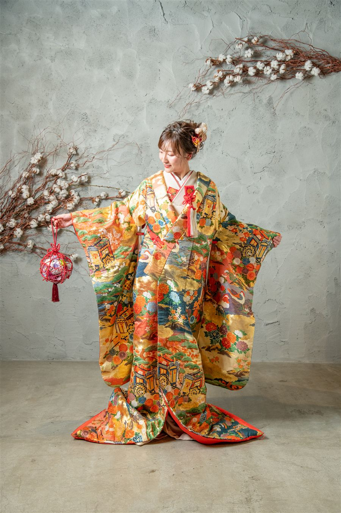
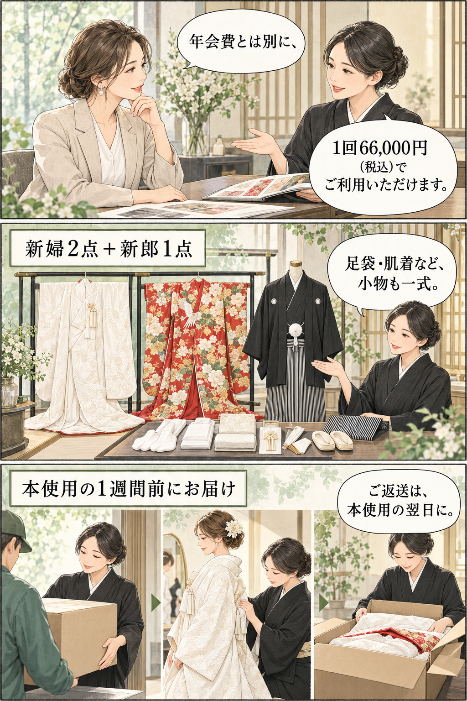
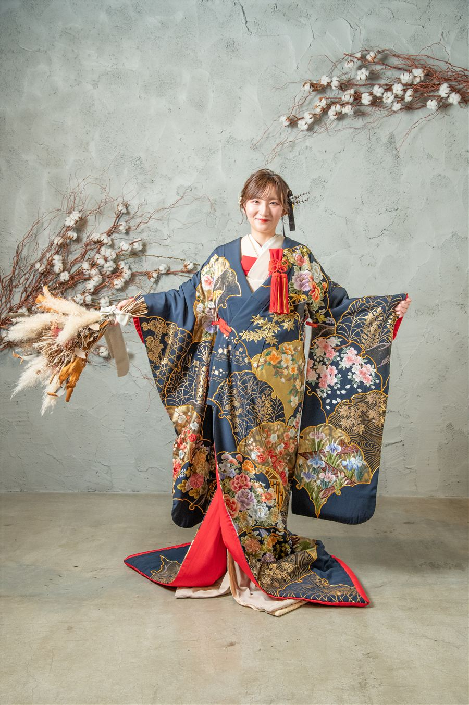

シロトイロとは
衣裳まで、お店でまとめてご提案。
シロトイロは、婚礼和装を全国の美容室さまにお届けする、会員制のレンタルサービスです。
着付け・ヘアメイクと衣裳を、お店でまとめてご提案いただけます。
会員さまのお支払いは、この2つ
年会費に、衣裳の利用料金は含まれていません。
年会費とは別に、本使用1回ごとに66,000円がかかります。
年会費12,000円 ＋ 本使用1回66,000円
※年会費を2026年12月31日までにお振込みの場合。
年会費は2027年中のお振込みで24,000円、2028年1月1日からは36,000円です。入会・更新時のお振込み日の金額が適用されます。
会員さまは往復送料込み。北海道・沖縄・離島の往復送料（実費）、色の追加・変更、振込手数料は別途かかります。送料はご予約時にお知らせします。
＋新郎和装1点白無垢・色打掛の組み合わせは自由。足袋・肌着などの小物も一式。セット内容を見る →最初のお手続きLINEで相談
→ ご入会規約への同意と年会費のお振込み後、ご入金確認でご利用開始。ご利用の流れを見る →ご予約後は1週間前に届き、
翌日に返送本使用料金は、発送日の前の営業日までにお振込みください。お届け・返送を見る →
漫画で見る、ご利用のイメージ
料金・セット・お届けを、ひと目で。

漫画の衣裳はイメージです。実際の衣裳は「衣裳を見る」からご確認いただけます。
衣裳を見る →婚礼のご相談、こんなことはありませんか。
和装のご相談をいただいても、衣裳のご用意がない
衣裳店をご紹介したら、着付けやヘアメイクのご依頼まで一緒に離れてしまった
衣裳を自前でそろえたいけれど、費用も置き場所も、お手入れも大変
シロトイロなら、衣裳の心配をせずに、婚礼のご相談をお受けいただけます。
衣裳まで、お店でまとめてご提案。

シロトイロは、婚礼和装を全国の美容室さまにお届けする、会員制のレンタルサービスです。
運営は、福井の婚礼衣裳店・株式会社真寿美衣裳。
着付け・ヘアメイクと衣裳を、お店でまとめてご提案いただけます。
お客様にとっても、ご相談先がひとつで済む安心につながります。
婚礼和装をたくさんご用意
小物まですべてセット
会員さまは往復の送料込み（北海道・沖縄・離島を除く）
66,000円で届く、衣裳と小物のセット。
本使用1回の料金です。年会費は別途必要です。


清らかな白無垢から、華やかな色打掛まで、婚礼和装をたくさんご用意しています。
新郎さまの紋付袴もそろいます。
| 区分 | 内容 |
|---|---|
| 新婦和装 | 2点（白無垢・色打掛の組み合わせは自由。色打掛2点も可） |
| 新郎和装 | 紋付袴 1点（黒紋付×白黒の袴） |
| 小物 | 懐剣・筥迫、掛下、羽織紐、足袋、肌着、草履 など一式 |
足袋や肌着まで、すべてそろってお届けします。
衣裳を見るお店に、婚礼衣裳の衣裳室を。
会員制だから、1回の衣裳代が半分以下に。
シロトイロは、1回ごとの貸し出しではなく、会員制を選びました。
婚礼のご相談は、いつ来るか分かりません。
だからこそ、お店の中に衣裳室があるように、ご相談が来たその日に衣裳までご提案いただける形にしたかったのです。
1. 1回あたりの料金を、大きく下げられるから
長くお付き合いいただく前提だからこそ、1回ごとの料金を下げてお返しできます。
新婦和装2点と新郎和装のセットで、会員さまは66,000円です。
2. 送料を気にせず、ご提案いただけるから
往復の送料は、弊社が負担します。遠方のお店さまでも、同じ料金でご利用いただけます。（北海道・沖縄・離島は除きます）
3. お店の衣裳室として、ずっと使っていただきたいから
たくさんの白無垢・色打掛・紋付袴を、お店の衣裳のようにお使いください。
一度きりではなく、長く頼っていただける存在でありたいと考えています。
1回のご利用料金を比較
同じセット：新婦和装2点＋新郎和装1点
税込・年会費は別途
| 費用の内訳 | 非会員 | 会員 |
|---|---|---|
| 衣裳代 | 143,000円 | 66,000円 |
| 往復送料 | 約10,000円 | 0円 |
| 合計 | 約153,000円 | 66,000円 |
会員の年会費は、この比較に含んでいません。北海道・沖縄・離島は、会員さまも往復送料（実費）が別途かかります。
※送料は福井県から福岡県へお送りした場合の目安です。地域により異なります。
年会費を含めると、いくら？
年1回ご利用の場合（税込）
年会費 ＋ 本使用1回66,000円
| 年会費のお振込み | 年会費 | 年1回ご利用の合計 | 非会員との差 |
|---|---|---|---|
| 2026年12月31日まで | 12,000円 | 78,000円 | 約75,000円お得 |
| 2027年1月1日〜12月31日 | 24,000円 | 90,000円 | 約63,000円お得 |
| 2028年1月1日から | 36,000円 | 102,000円 | 約51,000円お得 |
婚礼のご相談が年に数件のお店さまでも、無理なく続けていただけます。
料金のご案内
年会費 ＋ 本使用1回ごとに66,000円（税込）。
年会費と、ご利用のたびにかかる衣裳代を分けてご案内します。
本使用の料金（すべて税込）
| 会員さま | 非会員 | |
|---|---|---|
| 料金 | セット 66,000円（新婦和装2点＋新郎和装1点＋小物一式） | 新婦和装 1点55,000円／新郎和装 1点33,000円 |
| 往復送料 | 弊社負担（北海道・沖縄・離島を除く） | ご負担 |
※北海道・沖縄・離島へのお届けは、会員さまも往復の送料（実費）をご負担いただきます。金額はご予約の際にお知らせします。
※本使用の料金は、発送日の前の営業日までにお振込みください。
色の追加・変更（会員さま・非会員とも同じ）
| 小物・衣裳 | 内容 | 料金 |
|---|---|---|
| 懐剣・筥迫 | 白から色ものに変更 | ＋5,500円 |
| 掛下 | 白に加えて、色ものも一緒にお届け | ＋11,000円 |
| 羽織紐 | 白から色ものに変更 | ＋2,200円 |
| 袴 | 白黒から別の色に変更（差し替え） | ＋11,000円 |
掛下は白と色の2枚をお届けします。1着目は白、2着目は色、2着とも色など、自由にお使いください。
袴は差し替えのため、白黒の袴はお届けしません。
年会費について
年会費は、お振込みいただく時期によって変わります。
サービスを始めたばかりの今は、より多くの美容室さまに知っていただくため、お試しの期間として年会費をお安くしています。
| 年会費のお振込み | 年会費 |
|---|---|
| 2026年12月31日まで | 12,000円（オープニング特典） |
| 2027年1月1日〜12月31日 | 24,000円 |
| 2028年1月1日から | 36,000円 |
※ご入会のときも、毎年の更新のときも、お振込みの日の金額が適用されます。
※ご契約は12か月ごとです。年会費は12か月分を先にお振込みいただきます（振込手数料はお店さまのご負担です）。
※料金はすべて税込です。
はじめてでも、安心してお使いいただけるように。
雨天延長保証：本使用の日が雨・台風・大雪などのお天気でも、最大3日まで延長してお使いいただけます。追加料金はかかりません。本使用の日のうちにLINEでご連絡ください。
本使用の1週間前にお届け：試着や確認も、ゆっくりしていただけます。
送料込み：会員さまは往復の送料がかかりません（北海道・沖縄・離島を除く）。
発送前のキャンセルは無料：予定が変わっても、発送前なら費用はかかりません。
ご利用の流れ
1. ご入会：まずはLINEでご相談ください。利用規約をご確認・ご同意いただき、年会費をお振込みください（振込手数料はお店さまのご負担です）。ご入金を確認できた時点で、会員さまとしてご利用いただけます。
2. ご予約：衣裳を選んでご予約。迷っているときは7日間の仮押さえもできます（7日を過ぎると自動で取り消しになります）。本使用料金66,000円は、発送日の前の営業日までにお振込みください。
3. お届け：本使用の1週間前にお届けします。
4. 本使用：お客様の晴れの日に、着付け・ヘアメイクと一緒に。
5. ご返送：本使用の翌日にご返送ください。
よくある質問
Q. 婚礼のご相談が少ない年は、損になりませんか？
A. 年1回のご利用でも、年会費を含めて非会員料金よりお得になります。2028年以降の年会費36,000円でも、約51,000円の差があります。
Q. 会員にならなくても借りられますか？
A. はい、非会員料金でご利用いただけます。往復の送料はご負担いただきます。
Q. 予約はいつからできますか？
A. いつでも受け付けています。同じ衣裳にご予約が重なった場合は、先にご予約いただいたお店さまを優先します。7日間の仮押さえもできます（7日を過ぎると自動で取り消しになります）。
Q. キャンセル料はかかりますか？
A. 発送前のキャンセルは無料です。発送後のキャンセルは、セット料金の50%を頂戴します。（非会員の場合はご利用料金の50%）
Q. 本使用の日が雨だったら？
A. 雨・台風・大雪など、お天気が悪い日は、最大3日まで延長してお使いいただけます。追加料金はかかりません。本使用の日のうちに、LINEでご連絡ください。
Q. 本使用の料金は、いつ支払いますか？
A. 発送日の前の営業日までに、お振込みをお願いします。
Q. 足袋や肌着も返却しますか？
A. はい。ほかの衣裳と一緒にご返送ください。
Q. 袴の色は選べますか？
A. 基本は白黒の袴です。＋11,000円で別の色の袴に変更できます。
Q. 北海道・沖縄・離島へのお届けはできますか？
A. はい、お届けできます。北海道・沖縄・離島へは、会員さまも往復の送料（実費）をご負担いただきます。金額はご予約の際にお知らせします。
Q. 途中でやめることはできますか？
A. はい、いつでもおやめいただけます。年会費は12か月分を先にお支払いいただいているため、途中でおやめになっても返金はありません。おやめになった後は、会員料金での新しいご予約はできなくなります。会員のときにご予約いただいた本使用は、そのままの内容でご利用いただけます。
Q. 毎年の更新はどうなりますか？
A. 12か月が終わる前に、弊社から更新のご案内をお送りします。年会費をお振込みいただくと更新となります。
オープニング特典
より多くの美容室さまに知っていただくため、2026年12月31日までにお振込みいただいたお店さまは、年会費が 12,000円 になります。
（2027年中のお振込みは24,000円、2028年1月1日からは36,000円です）
まずはお気軽に、LINEでご相談ください。
春・秋の人気の日は、お早めのご予約がおすすめです。
LINEで相談する